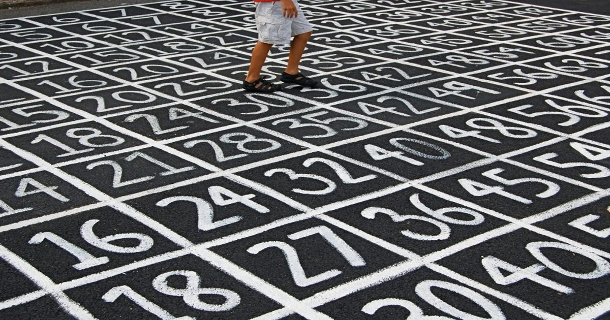

Как прорывы в ИИ и математике меняют подход к доказательной косметологии
Компания Anthropic заявила о возможном доказательстве гипотезы Римана с помощью искусственного интеллекта — задача, которая оставалась нерешенной почти сто семьдесят лет. Хотя новость касается фундаментальной математики, сам факт применения ИИ для решения сложнейших научных проблем напрямую отражается на развитии доказательной косметологии.
Вычислительные методы в исследовании кожи
Современная косметология всё чаще опирается на моделирование процессов в коже на молекулярном уровне. Математические алгоритмы позволяют предсказывать, как те или иные компоненты будут взаимодействовать с липидным барьером, ферментными системами и рецепторами кератиноцитов, не прибегая к длительным клиническим наблюдениям на ранних стадиях.
Подобные вычислительные подходы сокращают путь от гипотезы к проверенной формуле. Уже сейчас исследовательские лаборатории используют машинное обучение для скрининга тысяч потенциальных активных веществ, отбирая кандидатов с наибольшей вероятностью проникновения и биодоступности в целевые слои эпидермиса.

Валидация данных и стандарты доказательности
История с гипотезой Римана напоминает: любой результат, полученный ИИ, требует независимой верификации экспертным сообществом. В косметологии это переводится на язык реплицируемых клинических исследований, где протоколы открыты, выборка репрезентативна, а статистическая значимость достигает установленных порогов.
Для потребителя это означает, что упоминание «искусственного интеллекта» в маркетинге средства не заменяет опубликованные данные по эффективности. Стоит искать ссылки на рецензируемые публикации, регистрацию испытаний в открытых реестрах и соответствие декларируемых эффектов измеренным параметрам — гидратации, ТЭВЛ, плотности дермы по УЗИ или окклюзионной соноскопии.

Перспективы персонализации ухода
Математическое моделирование кожи отдельного пациента на основе неинвазивных измерений и анкетирования открывает путь к подбору ухода с учётом генетических полиморфизмов, микробиомного профиля и динамики барьерных функций. Алгоритмы уже умеют интегрировать эти многомерные данные в прогноз ответа на ретиноиды, пептиды или ниацинамид.
Однако переход от групповой статистики к индивидуальному прогнозу требует накопления массивов данных длительного наблюдения и согласования этических стандартов использования биометрической информации. Пока эти процессы идут, доказательная косметология опирается на фенотипическую диагностику в кабинете косметолога и подбор по алгоритмам, валидированным на когортах с похожими клиническими картинами.
Вопросы к специалисту при выборе средств
При консультации уместно спросить, какие объективные методы оценки состояния кожи использует врач перед назначением — корнеометрия, высокочастотное ультразвуковое сканирование, конфокальная микроскопия или хотя бы стандартизированная фотография в полярном свете. Наличие количественных базовых значений позволяет отслеживать динамику, а не полагаться на субъективные ощущения.
Также стоит уточнить, опирается ли рекомендованная схема на опубликованные протоколы с разумной степенью доказательности (уровней 1А–1Б по шкале Оксфордского центра доказательной медицины) или на корпоративные исследования без независимого аудита. Прозрачность источников данных — маркер ответственного подхода.
Подготовка к консультации с ИИ-диагностикой кожи
Перед визитом к дерматологу, который использует ИИ-анализ кожи, стоит сформулировать чёткие цели: что именно вы хотите улучшить — текстуру, пигментацию, признаки старения или контроль акне. Соберите историю ухода: какие средства применяли, как часто, были ли аллергические реакции или раздражение. Возьмите с собой актуальные фото кожи в естественном свете и список всех текущих продуктов, включая добавки. Уточните у специалиста, какие данные собирает алгоритм, как они хранятся и какая степень прозрачности модели — это поможет оценить достоверность рекомендаций.
Процедура не подходит при острых воспалениях, открытых ранах, экземах в стадии обострения или если кожа подвергалась агрессивным пилингам и лазерной обработке менее двух недель назад. Беременность и отдельные системные заболевания также могут стать ограничением — решение принимает врач после сбора анамнеза. Результат зависит от качества исходных снимков, валидации используемой модели на представитивных выборках и компетенции специалиста, который интерпретирует вывод ИИ и переводит его в индивидуальный протокол ухода.
Коротко: Прорывы в ИИ и математике задают новые стандарты строгости и для косметологической науки: от компьютерного скрининга компонентов до персонализированных прогнозов ответа кожи. Главное — отличать валидированные инструменты от маркетинговых нарративов.
Какие объективные методы диагностики кожи вы считаете необходимыми перед подбором ухода, и доверяете ли рекомендациям, основанным только на алгоритмах без клинической верификации?